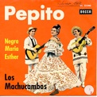
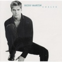

スペイン語で歌おう ¡Vamos a cantar en español!
> スペイン語で歌おう ¡Vamos a cantar en español! El mundo musical en español es muy rico y amplio con su variedad regional y de género. Seguramente encontrarás algunos artistas favoritos y canciones favoritas... En la clase, vamos a escoger una canción para cada mes y la vamos a cantar. Abril Mayo Junio Julio Enero Diciembre Noviembre Octubre




